1
Home
Start at the Home Page
Use the Home screen as the launch pad. The profile icon is also visible here.
Start Here
Search or tap a card
Visual quick-start guide
Start on Home, fill your inventory by voice, choose or create recipes, build a cart for what you lack, then cook hands-free when everything is ready.
Use the Home screen as the launch pad. The profile icon is also visible here.
Open Your Kitchen, tap Voice Add, record items, review the transcript, then save.
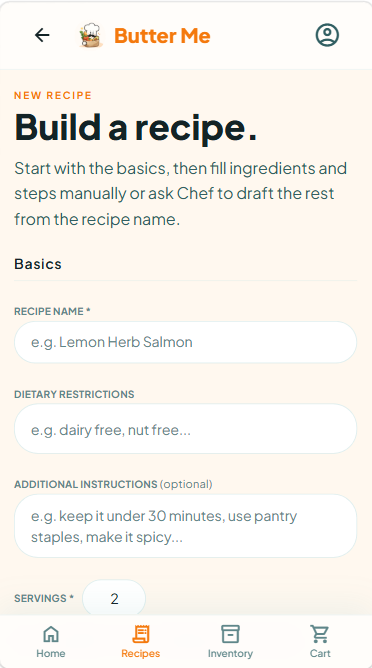
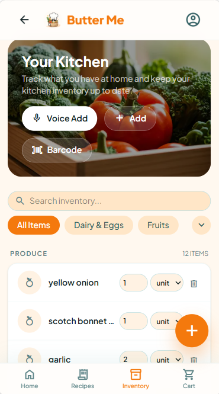
Browse Public, Mine, or Saved. Use the plus menu for URL import or a new recipe.
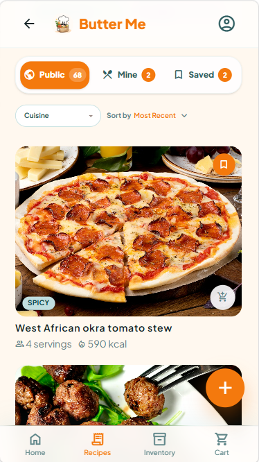
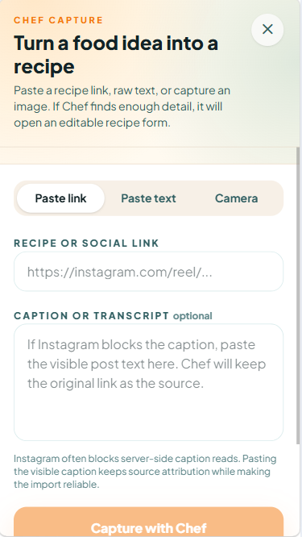
New recipeOpen a recipe, check missing ingredients, then add one or multiple recipes to the cart.
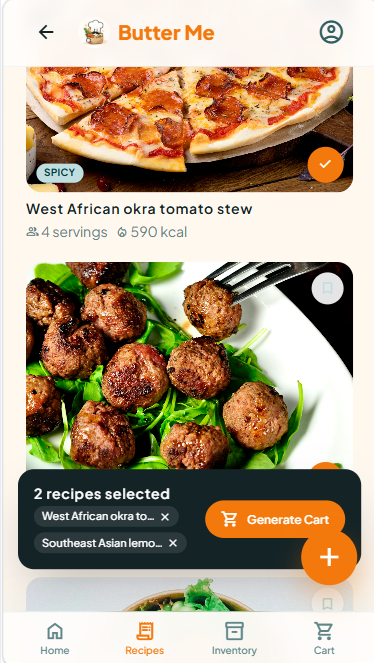
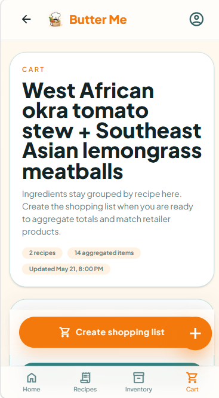
Create a shopping list from the cart, checkout, receive items, then come back to cooking.
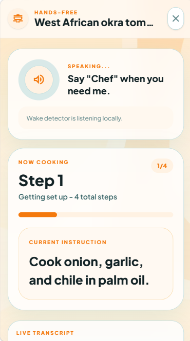
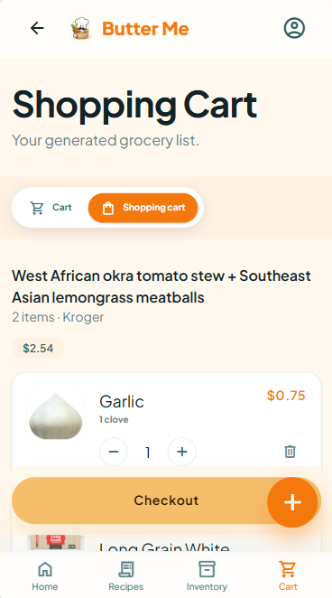
When ingredients are ready, start hands-free mode. Say "Chef" when you need help.
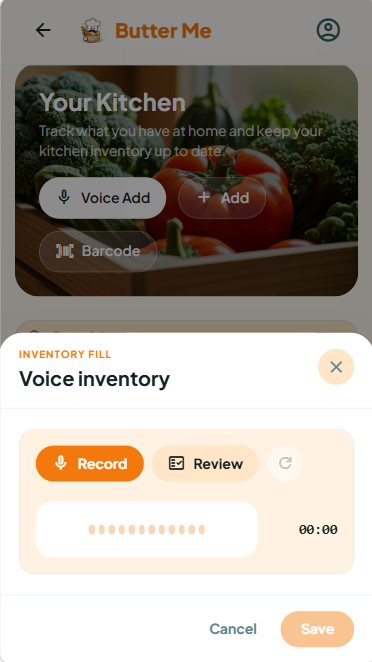
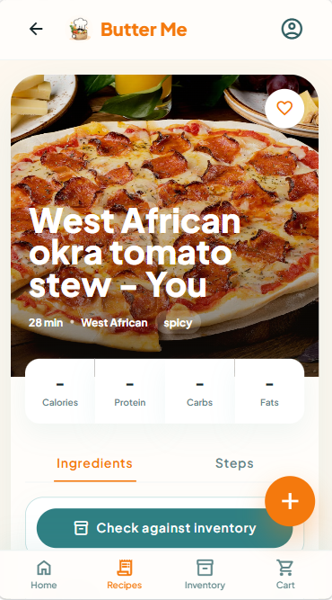
Say "Chef"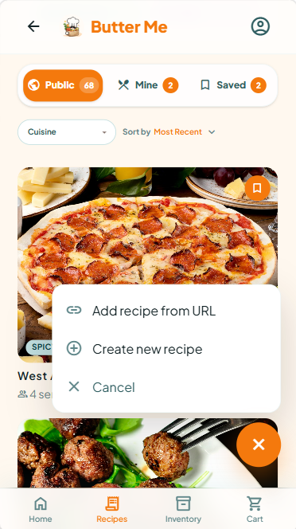
Paste a recipe link, paste text, or use the camera.
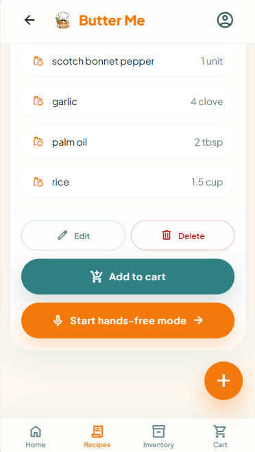
Use Public, Mine, and Saved to find recipe sources.
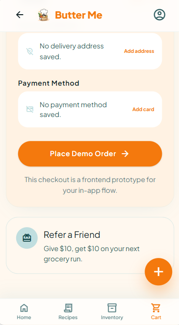
Add delivery address and payment before placing the order.
Open the profile icon for personal info and preferences.